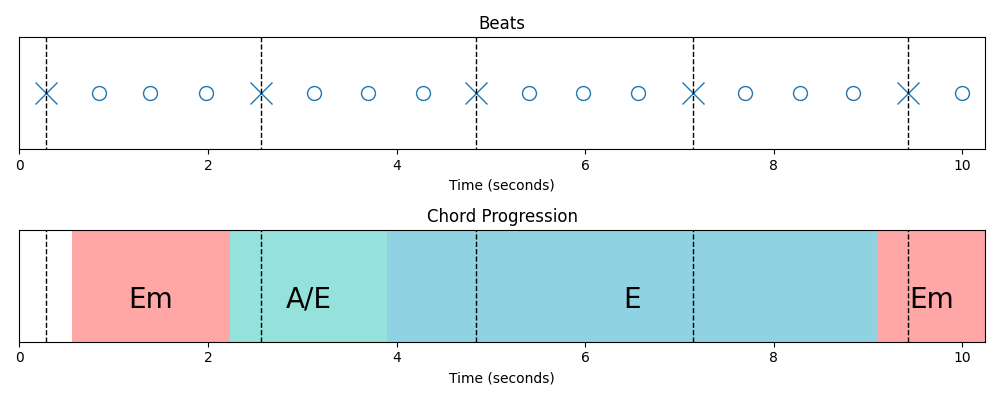
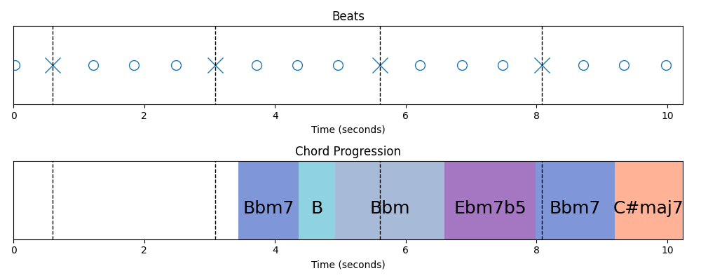
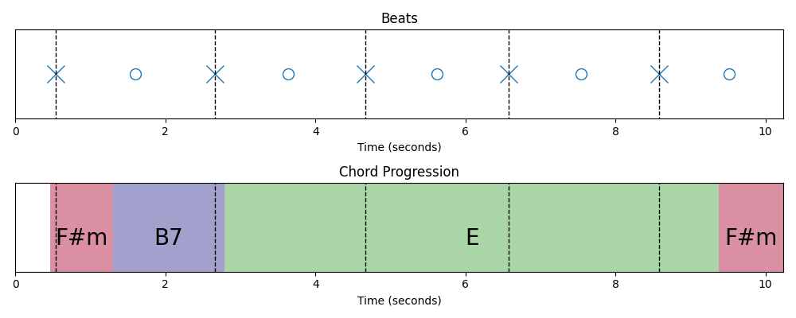
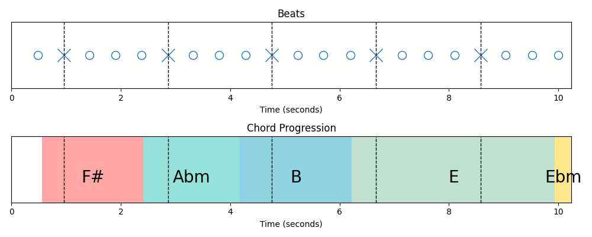
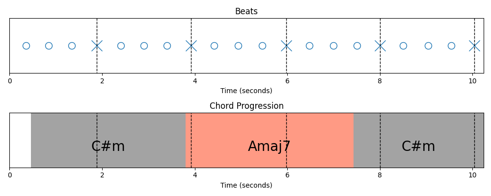

Demo Page of "Advancing Controllable Music Generation with Latent Rectified Flow Guided by Rhythm and Harmony"
Generation Results
Text
MusicLRF
MusicLRF+Control
MusicLDM
MusicGen-m
An energetic and retro dance music blend of electronic, house, and techno genres perfect for a night of dancing.
A slow, relaxing electronic track with a nostalgic and hopeful vibe perfect for unwinding after a long day at work.
This energetic instrumental piece blends rock and alternative elements with a mix of electric and acoustic instruments, reminiscent of classic rock bands.
This ambient and chillout music with a slow tempo and peaceful mood is perfect for meditation or yoga, featuring guitar and piano sounds.
An energetic instrumental guitar-driven track with elements of rock, pop, and pop rock, featuring a catchy melody that appeals to a wide audience.
Control
In this section, we showcase samples where generation quality is improved with external control signals.
Text
Control Signals
MusicLRF
MusicLRF+Control
A fast and energetic instrumental piece blending techno and industrial music with a dark, futuristic, and robotic feel.

This music blends jazz, funk, and lounge genres with a relaxed, chill vibe perfect for unwinding.

A beautiful and haunting instrumental piece blending folk and classical elements with a slow tempo and featuring a dulcimer.

A fast-paced blend of electronic and techno music with a futuristic sound reminiscent of the 80s and 90s scene.

A serene instrumental piece featuring acoustic guitar, blending classical and new age elements for relaxation and meditation.

Mel Spectrogram Visualization with Control
Text
Mel Spectrogram
Audio
"The mood of this song is romantic. The kick is played on every count of each bar. This is accompanied by percussion playing a simple beat. This song can be played in a romantic movie."